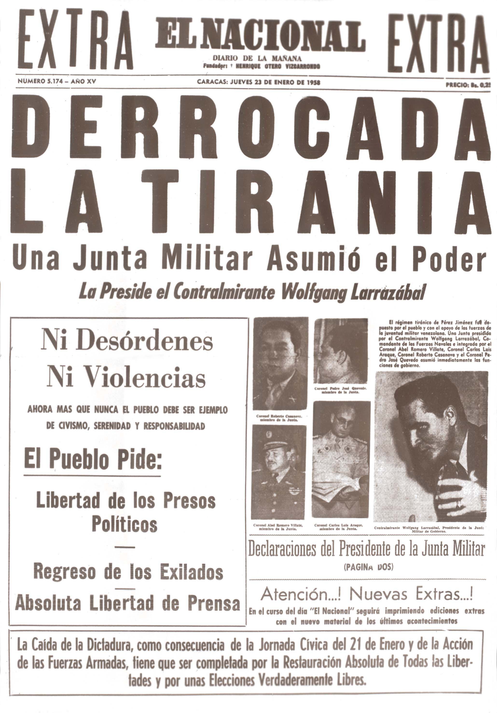

Golpes de estado en Venezuela
Aqui estan los que probablemente son los 3 golpes de estado con mayor impacto, en la historia de venezuela que marcaron un antes y un despues en la histoira de la nacion.
Caida de Marcos Perez Jimenez (1958)

Caida de Romulo Gallegos (1948)
Golpe de estado 4F (1992)